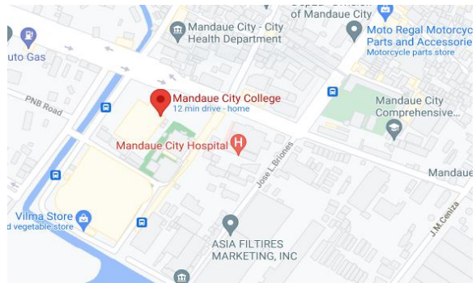

This chapter describes the research environment, software engineering methodology, requirements analysis and planning phase, data analysis, and descriptive method. This would be the basis of the proposed action plan.
RESEARCH ENVIRONMENT
The Mandaue City College (MCC) is a government-recognized higher educationinstitution in Don Andres Soriano Ave., Mandaue City, Philippines, established for deserving students, mostly graduates from barangay high schools, who have no access to education in mainstream private colleges or universities
The school was established by the Local Government of Mandaue through Ordinance 2 No. 10-2005-324A, enacted by the 10th Sangguniang Panlungsod on September 27, 2005. This ordinance was later revised on October 7, 2010 pursuant to SP Ordinance No. 12-2010-568.
SOFTWARE ENGINEERING METHODOLOGY
The methodology chosen for this project is the Descriptive Method and Traditional System Development Life Cycle (SDLC) method in developing the Computerized Enrollments system. The System Development Life Cycle (SDLC) are divided into 6 phases;
1. Requirement Analysis
2. System Design
3. Implementation
4. Testing
5. Deployment
6. Maintenance
The software process model used with this methodology is the Waterfall Model; whichan illustrate of plan-driven process principle. We researchers should plan and timetable the entirely of the process prior to begin work for.